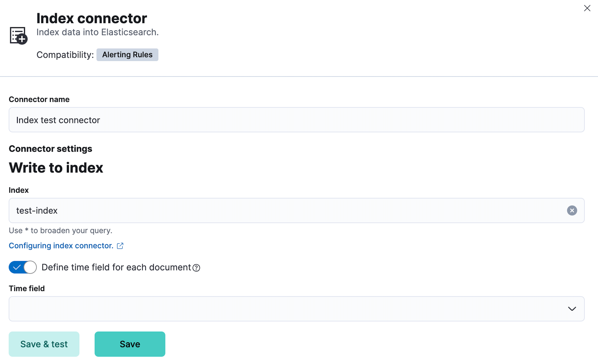
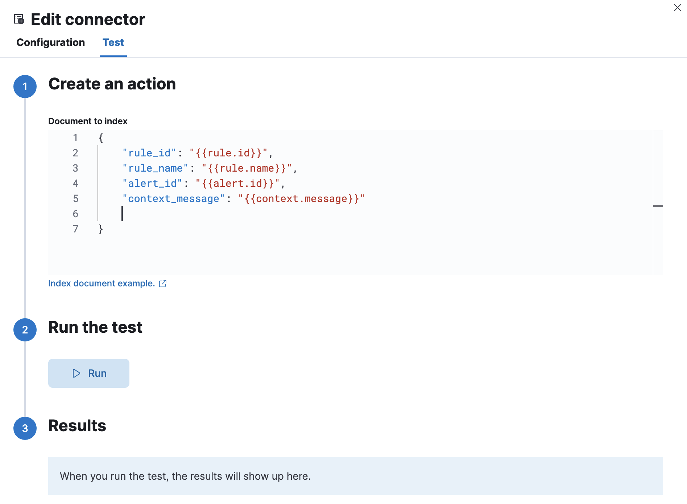

Index connector and action
editAn index connector indexes a document into Elasticsearch.
Create connectors in Kibana
editYou can create connectors in Stack Management > Connectors or as needed when you’re creating a rule. For example:

Connector configuration
editIndex connectors must have a name and an Elasticsearch index. You can optionally choose a field that indicates when the document was indexed.
Test connectors
editYou can test connectors as you’re creating or editing the connector in Kibana. For example:

Index connector actions contain a document in JSON format. For example, if you have an index with the following properties:
PUT test
{
"settings" : {
"number_of_shards" : 1
},
"mappings" : {
"properties" : {
"rule_id" : { "type" : "text" },
"rule_name" : { "type" : "text" },
"alert_id" : { "type" : "text" },
"context_message": { "type" : "text" }
}
}
}
Your test document could contain the following properties and variables:
{
"rule_id": "{{rule.id}}",
"rule_name": "{{rule.name}}",
"alert_id": "{{alert.id}}",
"context_message": "{{context.message}}"
}